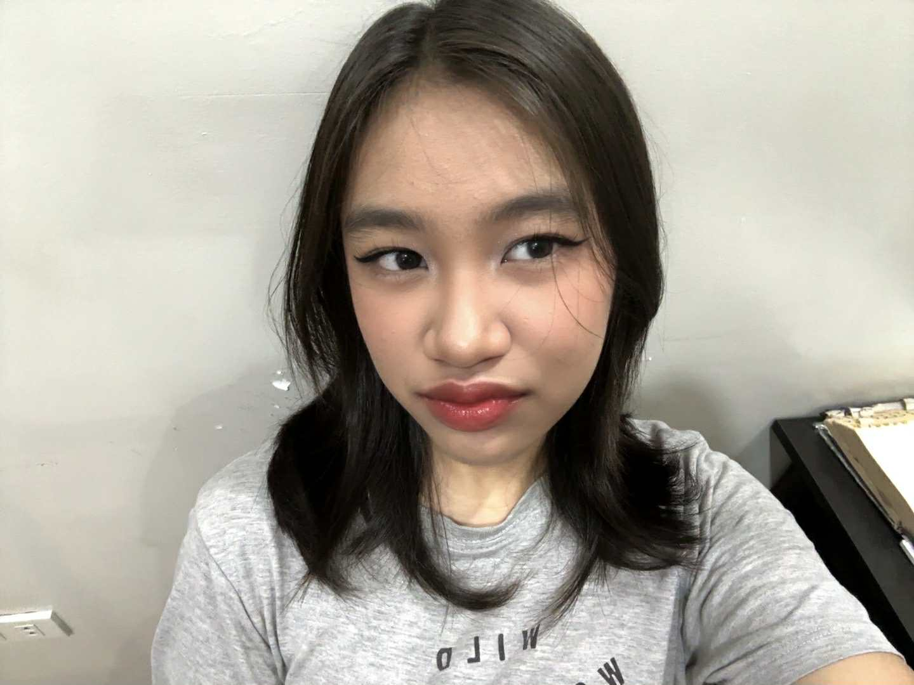

Hello! My name is Denise Camille S. Lucas. I’m someone who feels everything deeply and expresses it best through music and words. Music is my constant—it’s how I cope, reflect, and make sense of the world around me, whether I’m alone or surrounded by friends. At home I’m quiet and observant, but outside I’m chaotic, loud, and full of energy, especially with the people I’m closest to. I created this blog as a space to be honest, to document my thoughts, moments, and emotions as they are, without filters or expectations. This is where I let myself exist fully and share pieces of who I am.